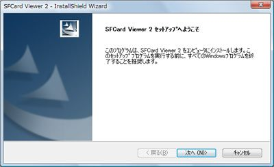
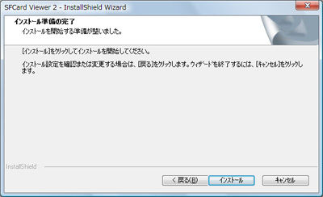
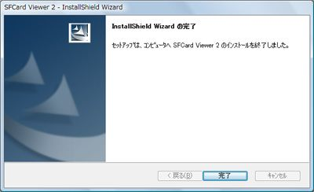
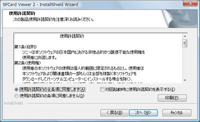
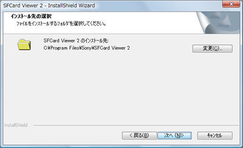
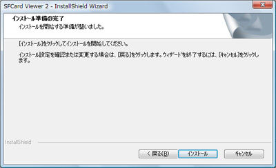
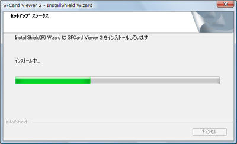
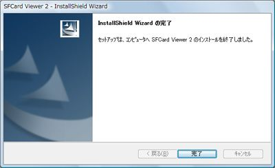

SFCard Viewer 2のインストールガイド
インストール前に
- NFCポートソフトウェア（FeliCaポートソフトウェア）最新版をインストールし、「FeliCaポート（パソリ）」が正しく動作することを確認してください。
- インストールの前にすべてのアプリケーションを終了させてください。
SFCard Viewer 2のインストール
ご利用にあたってのご注意
- 管理者権限でインストールを実行してください。




インストーラーを起動すると、インストールされるソフトウェアについてのお知らせが表示されます。
使用許諾契約が表示されますので、内容をご確認の上、同意される場合は「使用許諾契約の全条項に同意します(A)」を選択し、「次へ(N)」をクリックしてください。
次にソフトウェアのインストール先を指定します。インストールされるフォルダーを変更したい場合は、「変更(C)」をクリックして、インストール先のフォルダーを選択してください。

インストールがはじまります。

インストールが完了するとその旨を通知する画面が表示されます。以上で「SFCard Viewer 2」をご利用いただく為のセットアップは完了です。